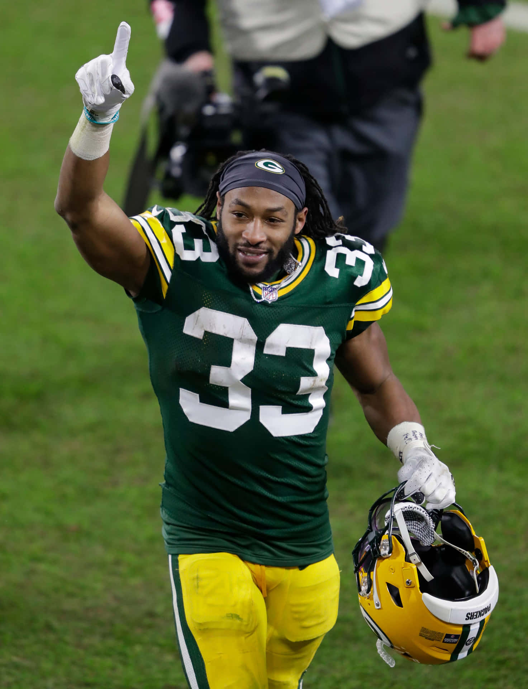

Aaron Jones
Running Back
Jersey Number: #33
Age: 29
2024 Season Highlights
- Rushing Yards: 1,300 yards
- Rushing Touchdowns: 12 touchdowns
- Receiving Yards: 350 yards
- Receiving Touchdowns: 3 touchdowns
- Yards per Carry: 5.2 yards
- Longest Rush: 75 yards
- Team Achievement: 10-7 record, NFC Divisional Round appearance
Playoff Performance
- NFC Divisional Round: 20 carries, 120 yards, 2 touchdowns vs. San Francisco 49ers (Packers win)